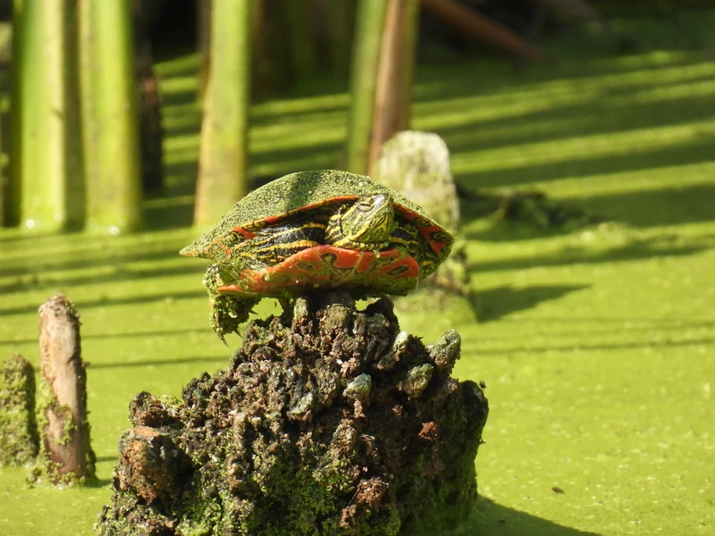

ニシキガメ4亜種のうち最も大型になる西の亜種。腹甲いっぱいに広がる暗色の模様がこの亜種の見どころで、カナダ南部から米中西部の池沼に広く分布する。

1年後の甲長は8〜12cm程度。よく泳ぎ、バスキングライトの下で長い時間甲羅を干す姿が日課になる。餌をよく食べ、人の姿を覚えて水面に寄ってくるようになる個体も多い。
10年後、オスは15cm前後、メスは20〜25cmに達する個体もいる。ニシキガメ4亜種で最も大きくなるため、水量とろ過能力の余裕が長期飼育を左右しやすい。15〜30年の寿命を見込んだ計画が必要になる。
流通名の「ニシキガメ」には複数の亜種が含まれ、セイブ亜種は最終サイズが最も大きくなる。小さいうちに60cm水槽で迎えると、数年後に水槽ごと買い替えることになりやすい。購入前に亜種名と産地を確認し、最終サイズから逆算して水槽を選んでおくと後悔が少ない。
カナダ南部（ブリティッシュコロンビア〜オンタリオ西部）から米中西部・北西部にかけての、流れのゆるい池沼・湿地に広く分布する。ニシキガメ4亜種のなかで最も北まで進出している亜種で、水底が柔らかく水草の多い環境を好む。
腹甲に広がる暗色の模様がこの亜種のいちばんの手がかりですが、背甲の模様だけで亜種を言い当てるのは専門家でも難しく、産地情報のほうが確実です。飼育そのものはニシキガメと同じで、丈夫でよく泳ぎ、餌食いも良好です。
← 横にスクロールできます
| 種名 | 甲長 | 難易度 | 必要環境 | 特徴 |
|---|---|---|---|---|
| セイブニシキガメ このページ | 18〜25cm | 入門 | 60〜90cm水槽 | 本種 |
| ニシキガメ（種全体） | 13〜25cm | 入門 | 60〜90cm水槽 | 本種の親種 |
| トウブニシキガメ | 13〜18cm | 入門 | 60cm水槽〜 | 最小の亜種 |
| ニセチズガメ | 10〜27cm | 入門 | 60〜90cm水槽 | 北米産・遊泳性 |
セイブニシキガメはニシキガメ4亜種のなかで最大に育つ亜種で、メスは甲長25cm近くになります。60cm水槽で始めたとしても、最終的には90cm級を用意する前提で計画してください。日本の夏は水温と水質の悪化が重なりやすいため、ろ過とエアレーションは強めに設計します。野生では冬眠しますが、国内で初めて飼うなら通年加温のほうが安全です。
ニシキガメの亜種は個体の見た目だけでの同定が難しく、分布の境界では中間的な特徴を持つ個体（intergrade）も広く知られています。産地の分からない個体を亜種名で断定することは、このサイトでは行いません。
飼育温度・湿度などの数値は飼育資料と国内飼育の一般的な目安にもとづきます。確定的な一次資料が乏しい項目は断定していません。